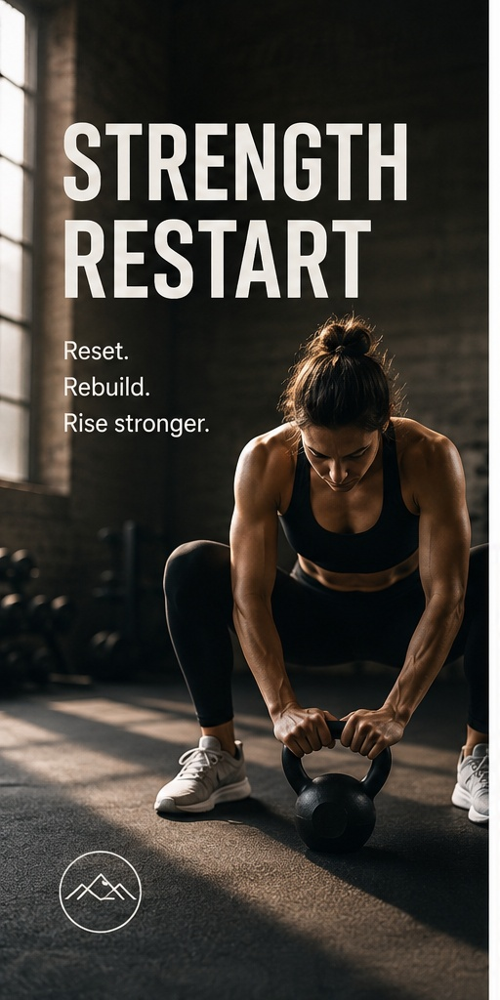
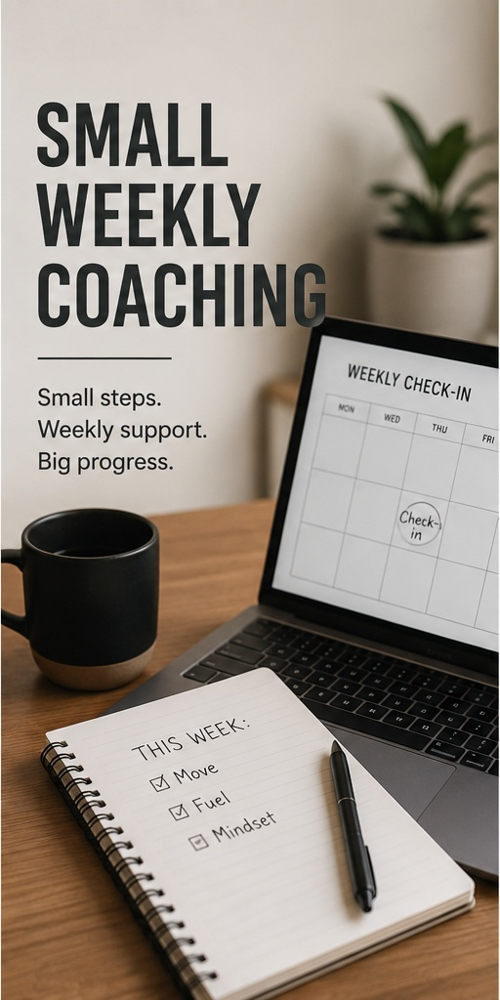
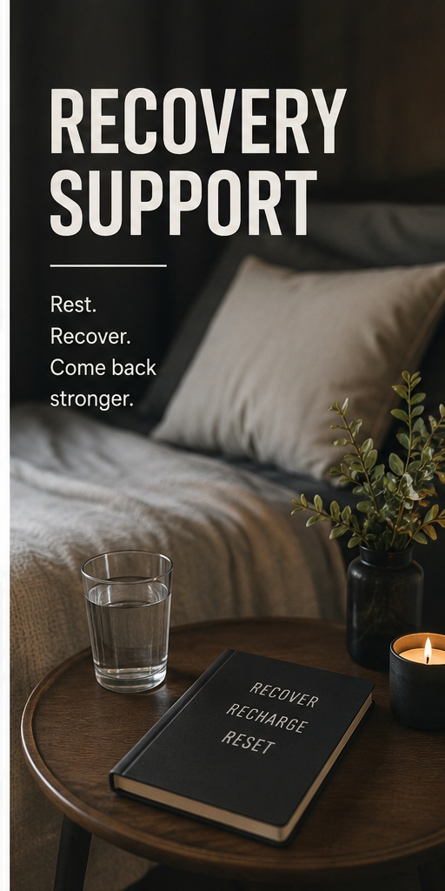

Strength Restart
Goal: Build confidence returning to structured training. Plan: Strength basics, simple tracking and weekly coaching. Outcome: Better consistency and clearer training confidence.
Start Similar ProjectPortfolio
A small collection of project styles showing clear layouts, strong first impressions and practical customer enquiry paths.

Goal: Build confidence returning to structured training. Plan: Strength basics, simple tracking and weekly coaching. Outcome: Better consistency and clearer training confidence.
Start Similar Project
Goal: Improve energy and make healthier routines easier. Plan: Nutrition habits, movement sessions and progress reviews. Outcome: A more stable weekly rhythm and better daily energy.
Start Similar Project
Goal: Reduce stiffness and support ongoing training. Plan: Recovery sessions, mobility work and program adjustments. Outcome: More comfortable movement and better recovery between sessions.
Start Similar Project